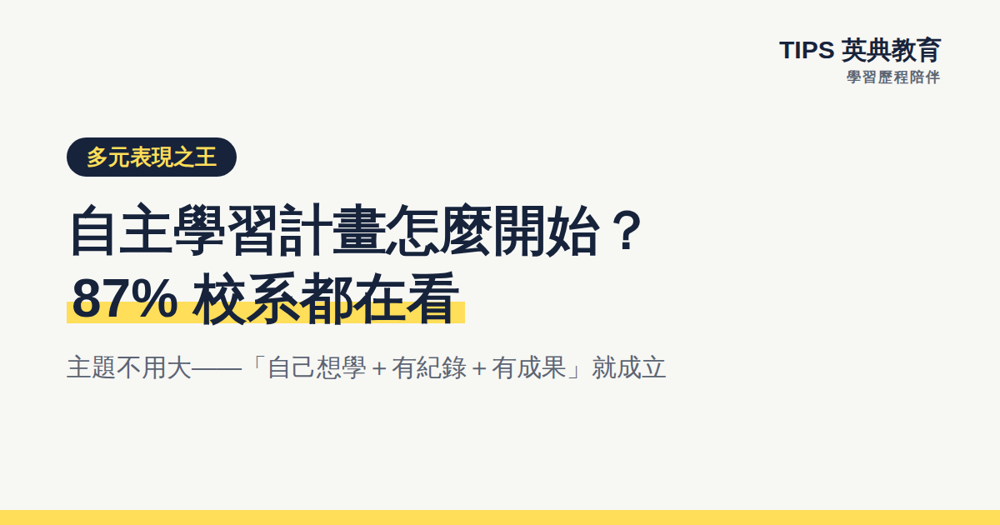

多元表現自主學習計畫怎麼開始？87% 校系都在看
自主學習以約 87% 的校系採計率高居多元表現第一。主題不用大——「自己想學＋有紀錄＋有成果」就成立；完整紀錄包含動機、每週執行、成果、卡關與調整、反思五要素，其中「卡關與調整」是教授最想看的一段。AI 可協助整理與深化反思，但依教育部函釋須揭露、不可代寫。
如果多元表現只能先做一件事，答案很明確：自主學習計畫與成果。全國校系的採計統計中，自主學習以約 87% 的採計率排第一——將近九成的校系都在看，遠高於社團（45%）、競賽（34%）、檢定（27%）。這篇講清楚：為什麼教授愛看、主題怎麼選、計畫書長什麼樣、以及最常踩的地雷。
為什麼近九成校系都採計自主學習？
大學端的邏輯很直接：大學的學習方式就是自主學習——沒有人盯進度、要自己找資料、自己安排時間。一份真實的自主學習紀錄，等於直接示範「我具備大學需要的學習能力」。它不像競賽需要名次、不像檢定需要考試，每個孩子都做得到，也因此成了審查時最公平、最能看出特質的一項。
主題怎麼選：小而真實，勝過大而空泛
最常見的迷思是「主題要夠厲害」。實際上榜的例子恰恰相反：有學生自發追蹤校園冷氣費做成報告、有人把班上段考成績做成統計圖表分析、有人研究手搖飲糖分、有人用 50 天自學 Excel 資料分析。共同點不是題目大，而是「自己想學＋有紀錄＋有成果」三件事都成立。
選題的實用公式：從生活裡的好奇出發（為什麼／怎麼辦），加一個可以動手的方法（調查、實作、自學一項工具），設一個 6–10 週可以完成的範圍。做得完，才有完整的過程可以寫。
一份完整的自主學習紀錄長這樣
- 1動機 為什麼想做這件事？跟自己的什麼經驗有關？（兩三句真話，勝過一段漂亮的空話）
- 2計畫與執行紀錄 每週做什麼、實際做了什麼——計畫和實際的落差本身就是好素材。
- 3學到的內容或作品 筆記、成品照片、數據圖表，具體可見。
- 4卡關與調整 審查教授最想看的一段：遇到什麼困難、怎麼修正。問卷回收率太低怎麼補救、自學卡住去哪裡找資源——這些都是亮點不是污點。
- 5反思與下一步 學完之後想法有什麼改變？如果重來會怎麼做？跟未來想走的方向有什麼連結？
三個最常踩的地雷
- 1抄範本 網路範本教授看過幾百份，一眼識破；「最像自己」的紀錄才有價值。
- 2只有成果、沒有過程 只貼一張成品照等於放棄了最加分的部分——過程紀錄要平時就存，事後補寫一定失真。
- 3AI 代寫不揭露 教育部 113 年 12 月函釋：AI 可以協助整理歸納、深化反思、完善呈現，但須標註工具與協助內容，代寫是紅線。與其冒險，不如讓 AI 當教練——用提問幫孩子想得更深，字自己寫。
在 TIPS，AI 教練這樣陪孩子做自主學習
TIPS 學習歷程陪伴平台的 AI 反思教練不代寫，只提問：「數據跟你預期不同的地方在哪？」「卡關那一週你改了什麼？」孩子每週隨手存的紀錄（30 秒快拍），期末由 AI 引導整理成完整成果，並自動附上符合教育部規範的揭露聲明。從高一下學期開始，一年可以完成一到兩個扎實的自主學習專案——時程安排見三年佈局指南，別忘了完成後要送出認證與勾選（流程陷阱見編輯中陷阱）。
常見問題
Q1：主題一定要跟想讀的科系有關嗎？
不一定，但有關聯會加分。更重要的是真實：自己想學、有過程紀錄、有具體成果。做得深的生活化主題，勝過抄來的高大上題目。
Q2：成果要做成什麼格式？
常見是一份 PDF：動機、每週紀錄、成果、卡關與調整、反思。頁數不是重點，過程真實才是；中央資料庫每件以 4MB 為限。
Q3：可以用 AI 幫忙嗎？
可以協助整理與深化反思，但依教育部函釋須標註工具與協助內容，不能代寫。TIPS 的 AI 教練只提問引導、孩子自己寫，並自動附揭露聲明。